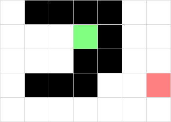
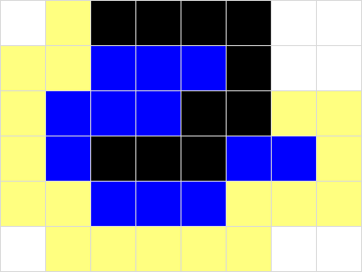
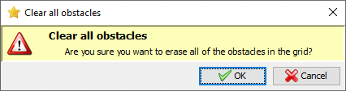
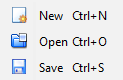

Welcome to the A* Pathfinder program!
A* is a popular pathfinding algorithm that can be found in many games, particularly Real Time Strategy titles such as Age of Empires,
or Command & Conquer. This program is a Java and OpenGL based implementation made for fun. It can be used to test the theory behind the algorithm.
The algorithm is not explained here - there are many better explanations out there and I recommend A* Pathfinding for Beginners by
Patrick Lester. This is the explanation I based my program on and is fairly easy to grasp. If you are looking for a more in depth look
at pathfinding, I would recommend Amit's A* Pages by Amit Patel.
When searching an area for a path, the area itself should be divided in such a way to simplify the task. In this program, the grid
is a 2D area made up of squares. It doesn't have to be squares - it could use hexagons, triangles or any other shape.
Black squares are considered obstacles - walls of a maze, areas of water, cliffs or any other unpassable terrain. The green
square signifies the start point. The red square is the finish point. These two points can be set by right clicking on a square
and selecting start or finish. An obstacle is created when you left click on a square.

When you have created a grid you want to try, click on the 'Calculate path' button.

Squares which have been visited, but not used are shown as yellow. The blue squares show the selected path and
provide the solution for the current grid.
To clear the grid of all obstacles, start and finish points, click on the 'Reset' menu item under the 'Tools menu'.

You can create new grids, save them and open them again in the program. This makes sharing grids easy. To do
this, use the items in the 'File' menu.
